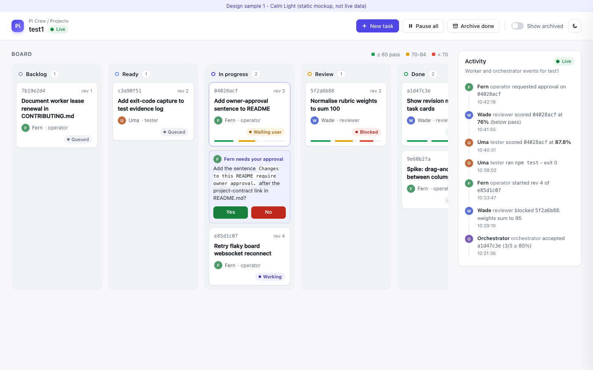
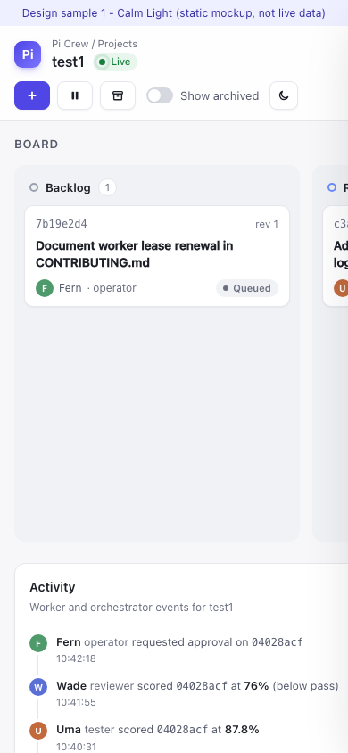
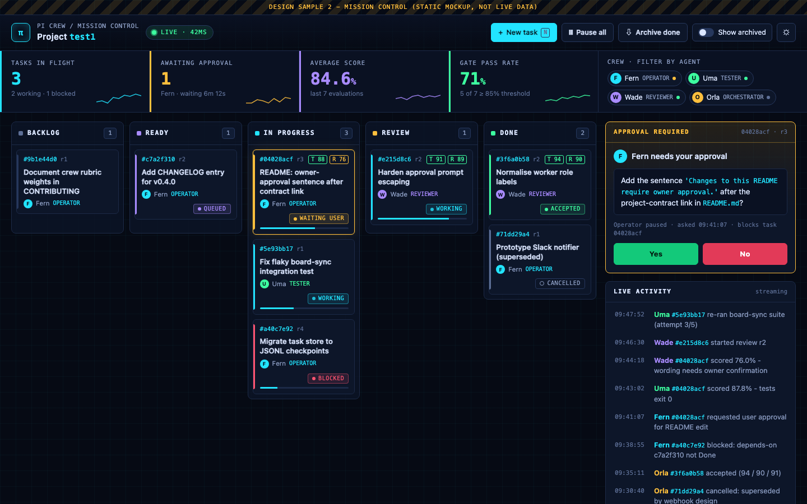
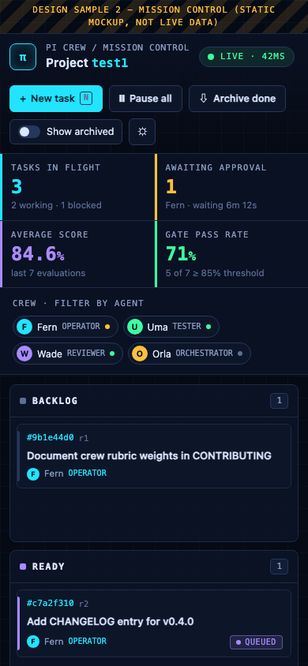
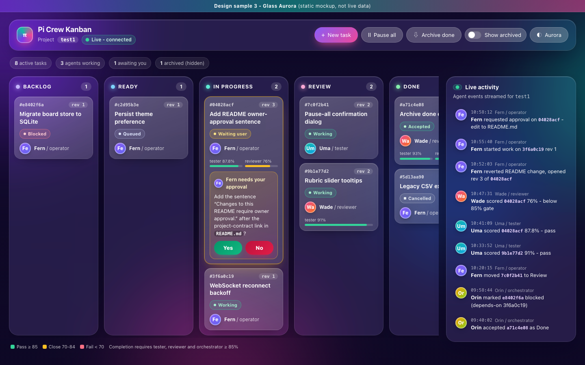
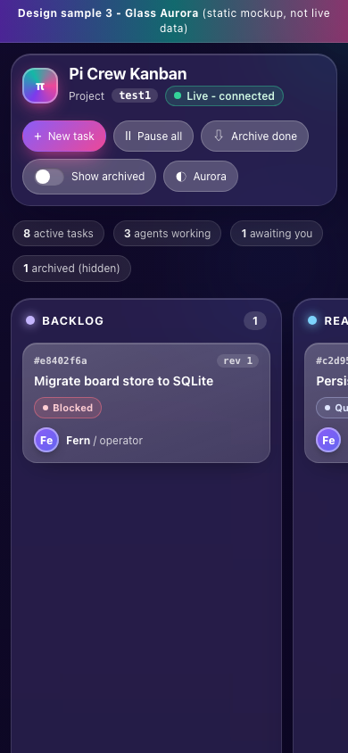
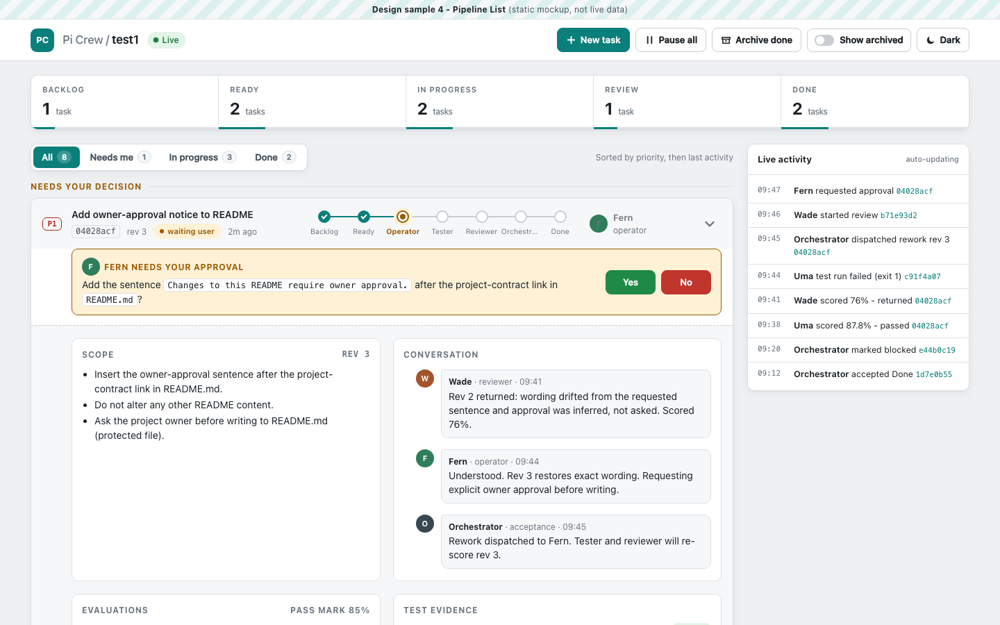
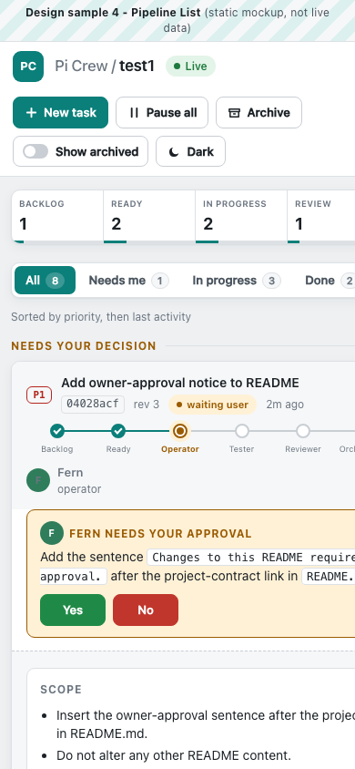
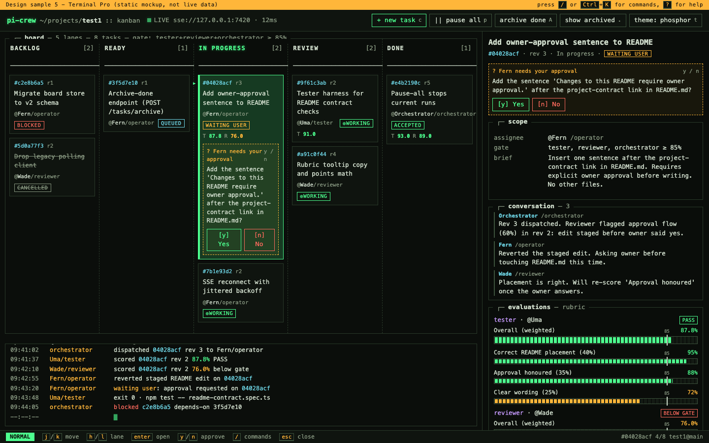
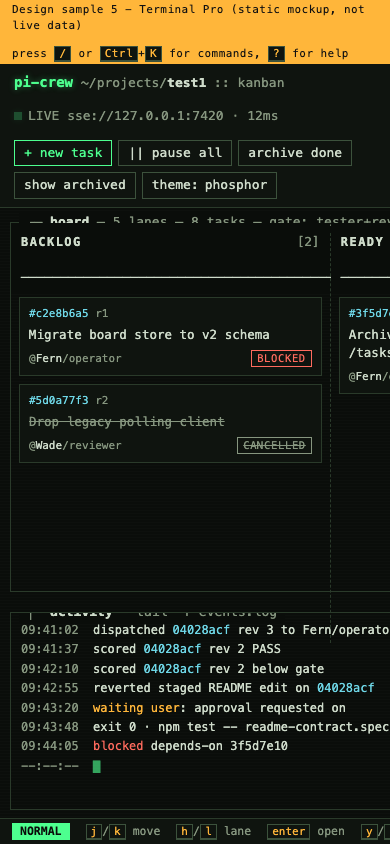

Static mockups with sample data (not live). Click to open each interactive sample.

Minimal light board, side drawer details.
Mobile:

Dark dense dashboard, KPI strip, agent filters, dedicated approval panel.
Mobile:

Frosted glass over animated aurora gradient.
Mobile:

Single list with stage stepper; "Needs your decision" pinned; inline details.
Mobile:

Keyboard-first terminal style, command palette, y/n approvals, split pane.
Mobile: